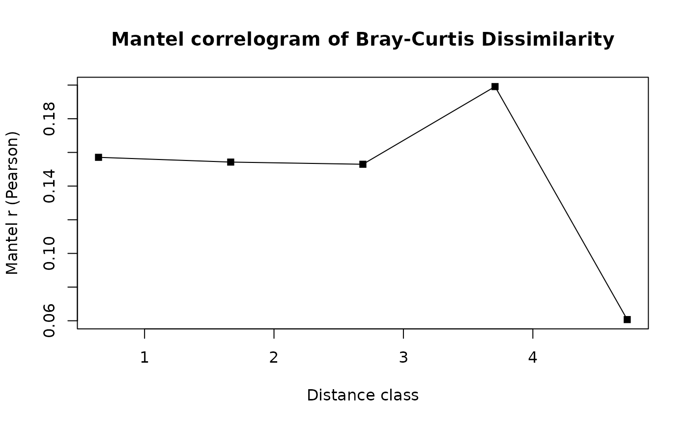

How does community similarity change with distance? Splits the distances
between samples (geographic, or any other) into classes, and for each
class runs a Mantel test of dm against a matrix marking the pairs of
samples in that class. Gives the same classes, statistics, and p-values
as vegan::mantel.correlog(), computing every class's test in one pass
of parallel C per permutation.
Usage
mantel_correlogram(
dm,
y,
data = NULL,
breaks = NULL,
n_classes = NULL,
cutoff = TRUE,
method = "pearson",
permutations = 999L,
p_adjust = "holm",
progressive = TRUE,
strata = NULL,
alternative = "sign",
seed = 0L,
cpus = n_cpus()
)Arguments
- dm
A
distobject, such as frombeta_div()orbray(), or a symmetric numeric matrix of distances. Must not containNAs or negative values. Its samples are the ones permuted.- y
The distances to split into classes: a
distobject or a symmetric numeric matrix, matched todm's samples by name when both have names, otherwise in the same order; or the samples' coordinates, a numeric matrix or data frame with one row per sample (matched by row name, else in the same order), whose Euclidean distances are used, asvegan::mantel.correlog()'sXY(a square, symmetric matrix with a zero diagonal is taken as distances); or numeric values, one per sample, whose absolute differences are used. Withdata, the name of one of its numeric columns (one value per sample), or the names of several (coordinates).- data
Optional sample metadata: a data frame with one row per sample, whose columns
yandstratacan name. Rows are matched to the samples indmby row name, and rows for other samples are ignored; without row names, they must be in the same order asdm. Default:NULL.- breaks
The boundaries of the distance classes: an increasing numeric vector,
n_classes + 1values from the start of the first class to the end of the last. Distances outside them are in no class. Default:NULL, forn_classesclasses of equal width from the smallest distance inyto the largest.- n_classes
The number of classes of equal width, when
breaksisn't given. Default:NULL, for Sturges' rule, \(\lceil \log_2 N + 1 \rceil\) for \(N\) pairs of samples, as invegan::mantel.correlog().- cutoff
TRUEto test, in the second half of the classes, only the classes whose pairs include every sample, asvegan::mantel.correlog()does;FALSEto test every class. Default:TRUE.- method
The correlation coefficient:
'pearson','spearman', or'kendall'(tau-b), as instats::cor(). Default:'pearson'.- permutations
The number of permutations. Default:
999. Alternatively, a matrix with one permutation of1:nper row, as frompermute::shuffleSet(), to use instead of random ones. Each permutation shuffles the samples ofy(the distance classes), withdmheld fixed, as invegan::mantel.correlog().- p_adjust
How to adjust the classes' p-values for multiple testing: any method of
stats::p.adjust()('none'for no adjustment), or'sidak'. Default:'holm'.- progressive
TRUEfor a progressive adjustment, asvegan::mantel.correlog()does by default (Legendre & Legendre 2012): the first tested class's p-value is not adjusted, and the k-th's is adjusted together with those of the k - 1 tested classes before it, at shorter distances.FALSEadjusts all the tested classes' p-values together. Default:TRUE.- strata
Permute samples only within these groups (blocks), for designs such as repeated measures. With
data, the name of one of its columns, or a vector with one value per row ofdata. Withoutdata, a vector with one value per sample, matched to the samples by name when it has names, otherwise in the same order. Default:NULL(free permutation).- alternative
Which correlations count as more extreme than each class's observed one:
'sign', in the direction of its sign (more positive when it is positive, more negative otherwise), as invegan::mantel.correlog();'greater'(more positive);'less'(more negative); or'two.sided'(larger in absolute value). Default:'sign'.- seed
An integer seed for the random permutations. The same seed gives the same p-values. Default:
0- cpus
How many parallel processing threads should be used. The default,
n_cpus(), is the CPU cores this R process may use, within any limits set on it. Results are the same for anycpus.
Value
A data frame of class
c('ecodive_mantel_correlogram', 'data.frame'), with one row per
distance class, in order of distance:
class_from,class_to: The class's boundaries. A class holds the pairs whose distance inyis greater thanclass_fromand at mostclass_to; the first class also holds those equal to itsclass_from.class_mid: The class's midpoint,vegan::mantel.correlog()'sclass.index.n_pairs: The number of pairs of samples in the class.vegan::mantel.correlog()'sn.distis twice this: it counts each pair twice, as in a full distance matrix.r: The Mantel statistic, the correlation ofdmwith a matrix that is 0 for the pairs in the class and 1 for the others. It is positive when samples in the class are more similar than other pairs (positive autocorrelation).NAfor a class that isn't tested.p_value: Its permutation p-value.p_adjusted:p_valueadjusted for multiple testing, withp_adjustandprogressive.
A class is tested when it has at least one pair of samples, but not
every pair; with cutoff = TRUE, the classes after the first half
(after class \(\lfloor K/2 \rfloor\) of \(K\)) are tested only when
their pairs include every sample.
Attributes: breaks (the classes' boundaries), method,
alternative, p_adjust, progressive, n_perm, permutation
('free', 'within strata', or 'supplied matrix'), and r_perm, a
matrix of the permutations' statistics, one row per class (NA for
classes that aren't tested). plot() draws the correlogram.
Details
Method
A Mantel correlogram (Sokal 1986; Oden & Sokal 1986; Legendre & Legendre
2012) shows how the similarity of samples changes with the distance
between them. The pairs of samples are grouped into classes by their
distance in y, and for each class \(k\), the Mantel statistic is the
correlation of the distances dm with a model matrix that is 0 for the
pairs in class \(k\) and 1 for the others. So a positive statistic
means that samples in that class are more similar than other pairs, and a
negative one that they are less similar. Each statistic is tested by
permuting the samples, as in mantel(); all classes share the same
permutations. Borcard & Legendre (2012) found that the test has correct
type I error, unlike simple and partial Mantel tests of spatial
structure.
By default, the p-values are one-tailed in the direction of each
statistic's sign, \((1 + \#\{r_{perm} \ge r\}) / (1 + permutations)\)
when \(r > 0\), and \((1 + \#\{r_{perm} \le r\}) / (1 + permutations)\)
otherwise (a statistic within 1e-12 of 0 counts as 0), as in
vegan::mantel.correlog(). As in vegan::mantel(),
permuted statistics within sqrt(.Machine$double.eps) of the observed one
count as ties. More permutations are needed than for a single test, for
the adjusted p-values of the later classes to reach significance.
Speed and memory
The correlation of dm with a class's 0/1 matrix depends on the
permutation only through the sum of dm over the pairs in the class:
Pearson's r on the standardized distances (Spearman's on their ranks),
and Kendall's tau-b on their midranks, as a Mann-Whitney statistic. So
each permutation is one pass over the \(n(n-1)/2\) pairs, which sums
every class at once, with no \(n \times n\) matrix, where
vegan::mantel.correlog() runs a separate Mantel test per class (and
Kendall's tau in \(O(n^4)\) each). Permutations run in parallel.
Reproducibility
The permutations come from seed, not from R's random number generator,
so set.seed() has no effect, and p-values are identical from run to run
and for any number of cpus. They differ from vegan::mantel.correlog()'s
random permutations, which differ between classes, so p-values agree with
it only up to sampling error.
Differences from vegan::mantel.correlog()
ymay also be numeric values per sample, or columns ofdata. Samples are matched by name betweendm,y,data, andstrata.n_pairscounts each pair of samples once;n.distcounts it twice.alternativeadds upper-tail, lower-tail, and two-sided tests.vegan lowers the first boundary by
.Machine$double.epsto put the smallest distance in the first class, which fails for distances of about 2 or more: their closest pairs then fall in no class. Here the first class includes its lower boundary.When a class is left untested between tested classes (it has no pairs, or, with
cutoff, lacks a sample), vegan adjusts only the p-values before it, and gives the later classes no adjusted p-value. Here every tested class's p-value is adjusted, in order of distance.Permutations can be restricted to
strata, or given as a matrix, which every class shares.
References
Borcard, D., & Legendre, P. (2012). Is the Mantel correlogram powerful enough to be useful in ecological analysis? A simulation study. Ecology, 93(6), 1473-1481. doi:10.1890/11-1737.1
Legendre, P., & Legendre, L. (2012). Numerical Ecology (3rd ed.), section 13.1. Elsevier.
Oden, N. L., & Sokal, R. R. (1986). Directional autocorrelation: an extension of spatial correlograms to two dimensions. Systematic Zoology, 35(4), 608-617. doi:10.2307/2413124
Sokal, R. R. (1986). Spatial data analysis and historical processes. In E. Diday et al. (Eds.), Data analysis and informatics IV (pp. 29-43). North-Holland.
Sturges, H. A. (1926). The choice of a class interval. Journal of the American Statistical Association, 21(153), 65-66. doi:10.1080/01621459.1926.10502161
Examples
# 40 samples on a 2-D landscape, whose communities change gradually
# across it.
set.seed(1)
meta <- data.frame(
row.names = paste0('S', 1:40),
x = runif(40, 0, 10),
y = runif(40, 0, 10) )
counts <- matrix(rpois(40 * 20, 5), 40, 20)
counts[, 1:5] <- counts[, 1:5] + round(2 * meta$x)
rownames(counts) <- rownames(meta)
dm <- bray(counts)
# Are nearby samples more similar, and distant ones less?
res <- mantel_correlogram(dm, c('x', 'y'), meta)
res
#> # A data.frame: 11 × 7
#> # Mantel correlogram of Bray-Curtis Dissimilarity
#> class_from class_to class_mid n_pairs r p_value p_adjusted
#> <dbl> <dbl> <dbl> <int> <dbl> <dbl> <dbl>
#> 1 0.134 1.15 0.644 31 0.157 0.001 0.001
#> 2 1.15 2.18 1.67 68 0.154 0.001 0.002
#> 3 2.18 3.2 2.69 86 0.153 0.001 0.003
#> 4 3.2 4.22 3.71 137 0.199 0.001 0.004
#> 5 4.22 5.24 4.73 118 0.0607 0.05 0.05
#> 6 5.24 6.26 5.75 118 NA NA NA
#> 7 6.26 7.28 6.77 88 NA NA NA
#> 8 7.28 8.3 7.79 72 NA NA NA
#> 9 8.3 9.32 8.81 39 NA NA NA
#> 10 9.32 10.3 9.84 16 NA NA NA
#> 11 10.3 11.4 10.9 7 NA NA NA
#> # Attributes: breaks, method, alternative, p_adjust, progressive, n_perm,
#> # permutation, r_perm
plot(res)

# Five classes, tested with Spearman's rank correlation.
mantel_correlogram(dm, dist(meta), n_classes = 5, method = 'spearman')
#> # A data.frame: 5 × 7
#> # Mantel correlogram of Bray-Curtis Dissimilarity
#> class_from class_to class_mid n_pairs r p_value p_adjusted
#> <dbl> <dbl> <dbl> <int> <dbl> <dbl> <dbl>
#> 1 0.134 2.38 1.26 117 0.258 0.001 0.001
#> 2 2.38 4.63 3.5 249 0.265 0.001 0.002
#> 3 4.63 6.87 5.75 246 -0.163 0.002 0.003
#> 4 6.87 9.12 8 140 NA NA NA
#> 5 9.12 11.4 10.2 28 NA NA NA
#> # Attributes: breaks, method, alternative, p_adjust, progressive, n_perm,
#> # permutation, r_perm